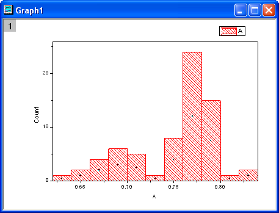
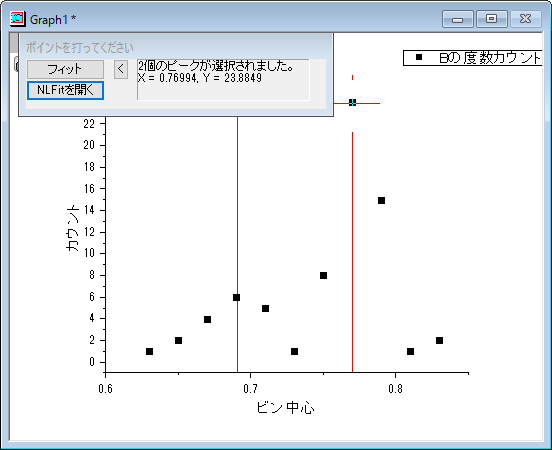
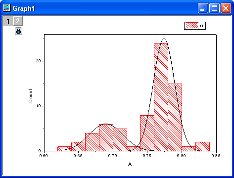

ヒストグラムに複数フィット曲線を追加する
MultiFittedCurve-in-Histogram
サマリー
Originでは、度数カウントの結果からピークをフィットすることができます。また、フィットした曲線は、ヒストグラムの新しいレイヤに追加できます。
学習する項目
- ヒストグラムを作図する
- 度数カウントを使って統計を実行する
- 複数ピークフィットの機能を使ってピークを検索し、フィットを実行する
- 新しいレイヤを追加する
ステップ
サンプルデータをコピーして、Originに貼り付け、対象の列をYに設定します（列を選択してOriginのメニューから列：列XY属性の設定:Y列として設定を選びます）。メニューから」を選び、ヒストグラムを作図します。
- 
度数カウント
- サンプルデータを選択し、度数カウントダイアログを開くためにを選択して、freqcountsダイアログを開きます。
- OKボタンをクリックして終了します。新しい結果シートが生成されます。
ピークフィット
- FreqCounts1のCol(Counts)を選択し、解析：ピークと基線：複数ピークフィットメニューから、複数ピークフィットダイアログを開きます。
- 開いたダイアログで、ピーク関数としてGaussianを選択して、OKボタンをクリックします。
- グラフウィンドウが自動作成されるので、グラフ上でピーク位置を指定します。ピーク中心でダブルクリックするとピークを取得できます。この方法で2つのピークを取得します。

注意: ピーク中心を一回クリックしてから、キーボードの右/左矢印キーで移動し、中心を調整することもできます。確定するときは、Enterキーを押します。
- ベースラインをY=0にします。この設定は、NLFitを開くボタンをクリックして開くダイアログで行います。パラメータタブを開きます。パラメータy0
の値を0にし、固定チェックボックスにチェックをつけます。「フィット」ボタンをクリックし、フィットを実行します。
 |
ベースラインが複雑な場合や、指定した手法によるピークの自動検索をしたい場合、ピークアナライザーを使用してください。ピークアナライザーは、解析：ピークと基線：ピークアナライザーメニューから使用できます。ピークアナライザーは、上記の2つの場合だけでなく、より強力なコントロールを提供しています。
|
- 元のワークブックに、フィット結果のレポートとフィット曲線データを含むnlfitpeaks1およびnlfitpeaksCurve1シートが追加されます。
フィット曲線の追加
- ヒストグラムのグラフをアクティブにして、メニューからグラフ操作：新規レイヤ(軸)：右Y（Xスケール・寸法リンク）を選択して、レイヤを追加します。
- レイヤ2アイコンをダブルクリックしてレイヤ内容ダイアログボックスを開きます。
- 左パネルで、Ctrlキーを押しながらnlfitpeaksCurve1シートのcol("Fit Peak
1") と col("Fit Peak 2")を選択し、Aの隣の三角形ボタンをクリックしてメニューから折れ線を選択します。次に、->ボタンをクリックして右パネルに追加します。
- OKをクリックします。2つのフィット曲線がヒストグラムに追加されます。
- グラフをダブルクリックして、作図の詳細ダイアログを開きます。左側のパネルからRightYを選択し、右側のパネルで「軸スケール間のリンク対応」タブを開き、X軸のリンクとY軸のリンクの両方に対して、直接(1対1)を選択します。OKをクリックしてダイアログを閉じます。
- フィット曲線が右側のスケールでヒストグラムに追加されます。下のグラフは結果のグラフで、右Y軸は消去されています。

サンプルデータ
| 0.631 |
| 0.642 |
| 0.652 |
| 0.662 |
| 0.669 |
| 0.676 |
| 0.677 |
| 0.69 |
| 0.691 |
| 0.696 |
| 0.697 |
| 0.699 |
| 0.699 |
| 0.7 |
| 0.7 |
| 0.708 |
| 0.712 |
| 0.718 |
| 0.731 |
| 0.744 |
| 0.749 |
| 0.751 |
| 0.752 |
| 0.753 |
| 0.758 |
| 0.758 |
| 0.759 |
| 0.761 |
| 0.761 |
| 0.763 |
| 0.763 |
| 0.763 |
| 0.765 |
| 0.767 |
| 0.768 |
| 0.768 |
| 0.769 |
| 0.769 |
| 0.77 |
| 0.771 |
| 0.771 |
| 0.772 |
| 0.774 |
| 0.775 |
| 0.775 |
| 0.776 |
| 0.776 |
| 0.776 |
| 0.777 |
| 0.778 |
| 0.779 |
| 0.78 |
| 0.78 |
| 0.781 |
| 0.784 |
| 0.784 |
| 0.785 |
| 0.785 |
| 0.789 |
| 0.789 |
| 0.791 |
| 0.794 |
| 0.795 |
| 0.796 |
| 0.798 |
| 0.798 |
| 0.803 |
| 0.82 |
| 0.831 |